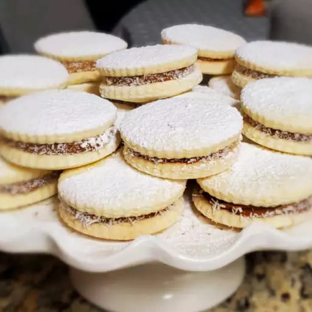

Alfajores

Alfajroes listos en tu mesa
El alfajor es un postre dulce con un característico formato redondo.se compone de dos o más galletas unidas por un relleno dulce y generalmente bañadas en chocolate, glaseado o azúcar en polvo.El relleno puede ser de dulce de leche o miel, aunque también existen alfajores de frutas, mousse de chocolate y diferentes rellenos.
Ingredientes
- 90 Gramos Manteca
- 70 Gramos Azúcar
- 180 Gramos Harina Leudante
- 250 Gramos Dulce De Leche
Pasos a seguir:
- Mezclar en un bol la manteca, el azúcar, el huevo, la miel y la esencia.
- Incorporar los ingredientes secos tamizados y unir bien.
- Colocar las tapas en placa enmantecada.
- Unir las tapas de a dos con dulce de leche.